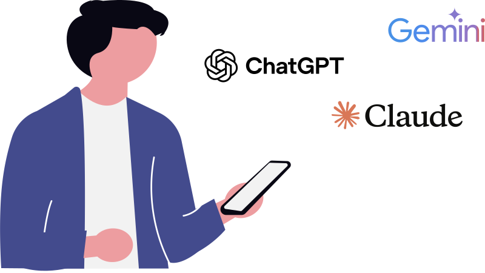

Bienvenido a WikIA
Tu espacio para entender la IA. Explora su historia, domina los conceptos clave y descubre las herramientas actuales. Todo con un enfoque ético, claro y accesible.

Tu espacio para entender la IA. Explora su historia, domina los conceptos clave y descubre las herramientas actuales. Todo con un enfoque ético, claro y accesible.